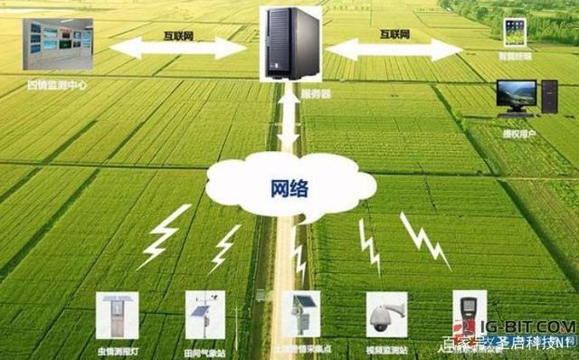
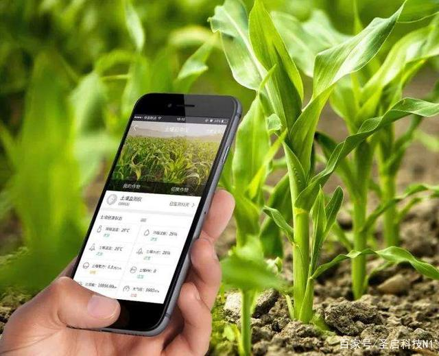
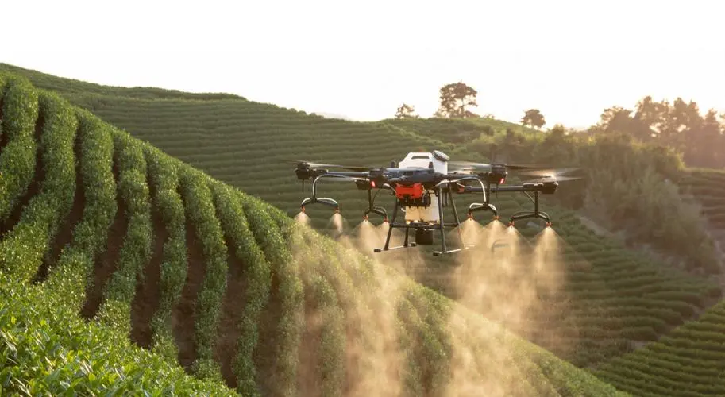
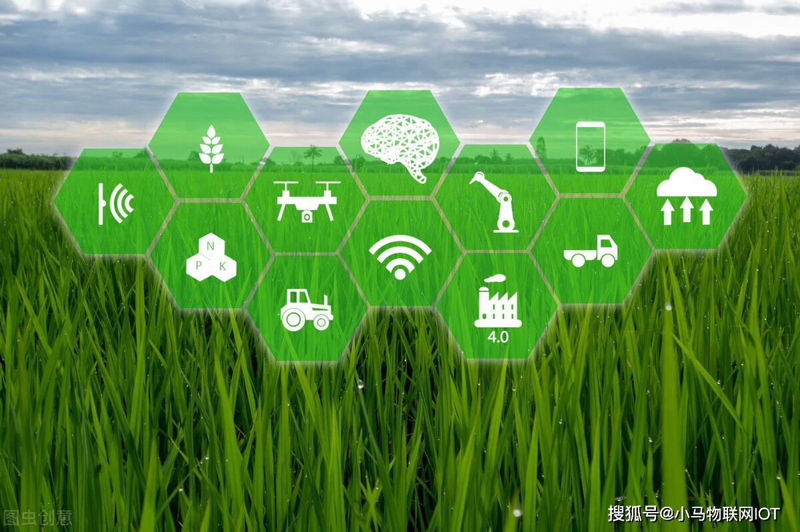

智慧农业是结合传统农业，将物联网、大数据、云计算、人工智能、5G等新兴技术切实地运用到传统农业中，可以通过对现代农业生产环境的智能感知和数据分析，实现农业生产精准化管理和可视化诊断。



精准农业是智慧农业的第一站，其主要依靠 5S 技术，当前已经发展成熟。5S 技术包括 遥感、地理信息系统、全球定位系统、数字摄影测量系统、专家系统等，目前在农业中的应用已经较为成熟。在 5S 技术精准定位导航的作用下，耕种、收割等适合中大型农机作业的简单场景有望率先落地。大数据、物联网等技术也在农业领域中逐渐应用，主要用于智能施肥、灌溉设备的构建，在 5S 技术的配合下，有望推动播种、施肥、灌溉、 除虫等场景快速落地。
云计算、人工智能、5G 农业应用当前正处于探索阶段，是农业 3.0 后期迈向 4.0 的关 键。在 3.0 基本实现农业自动化、精准化作业的基础上，通过 5G 网络传输海量物联网 数据，由人工智能和云计算技术分析决策后，可在大范围内将农业资源配置深度优化， 进一步降低人工参与度，使生产作业更智能、管理更精细、决策更精确。
农业无人机可集播撒、喷洒、测绘等功能于一体，精准高效的完成多项农事。农业无人 机同样以高精度定位导航技术为核心，辅以摄像头、雷达等传感器实现精准定位导航、 空中避障、地形探测等操作，搭配大容量智能药肥箱，以完成施肥、除虫等农事活动。 此外，农业无人机可配备多镜头传感器，快速执行农田果园高清测绘任务、快速拼接高 清地图，全面提升农业无人机作业效率。
一:物联网技术
物联网技术是将传感器、GPS系统、全球地理信息系统、感应器、激光扫描等组成。可以构成一个相对完整全面的物联网管理体系
二:智慧农业系统
智慧农业是指利用多种现代农业技术，实现对农业的自动化、精细化、全面化、智能化、科学化管理。智慧农业系统运用GPS系统、地理信息系统，等实现对农业的数据分析整理和实时监控，更清晰直观的了解农业作物的长势情况。
三:智慧农业系统解决方案
1:安防急需提高、注意防火防盗
2:人工成本高，急需机械自动化
3:病虫害发病快，传统防治难以为继
4:需要对外展示的窗口，助力宣传